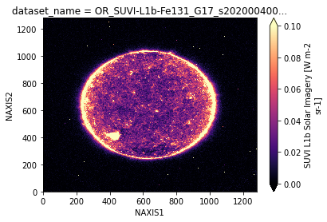

Brian Blaylock
January 13, 2021
Solar Ultraviolet Imager#
Yes, there is even solar ultraviolet data from the GOES instrument on AWS.
[1]:
from goes2go.data import goes_nearesttime
[2]:
g = goes_nearesttime('2020-01-04 00:00', product='SUVI-L1b-Fe131')
_______________________________
| Satellite: noaa-goes17 |
| Product: SUVI-L1b-Fe131 |
📦 Finished downloading [1] files to [/p/home/blaylock/data/noaa-goes17/SUVI-L1b-Fe131].
📚 Finished reading [1] files into xarray.Dataset.
[3]:
g
[3]:
<xarray.Dataset>
Dimensions: (NAXIS1: 1280, NAXIS2: 1280)
Coordinates:
dataset_name <U72 'OR_SUVI-L1b-Fe131_G17_s2020...
date_created <U22 '2020-01-04T00:01:57.6Z'
time_coverage_start <U22 '2020-01-04T00:01:39.0Z'
time_coverage_end <U22 '2020-01-04T00:01:40.0Z'
Dimensions without coordinates: NAXIS1, NAXIS2
Data variables:
RAD (NAXIS2, NAXIS1) float32 ...
DQF (NAXIS2, NAXIS1) float32 ...
IMSENUMB float64 4.091e+06
CRPIX1 float64 633.9
CRPIX2 float64 641.8
CDELT1 float64 2.5
CDELT2 float64 2.5
DIAM_SUN float64 780.8
CUNIT1 |S6 b'arcsec'
CUNIT2 |S6 b'arcsec'
ORIENT |S4 b'SESW'
CROTA float64 359.4
SOLAR_B0 float64 -3.287
PC1_1 float64 0.9999
PC1_2 float64 0.0112
PC2_1 float64 -0.0112
PC2_2 float64 0.9999
CSYER1 float64 0.4713
CSYER2 float64 0.1636
WCSNAME |S25 b'Helioprojective-cartesian'
CTYPE1 |S8 b'HPLN-TAN'
CTYPE2 |S8 b'HPLT-TAN'
CRVAL1 float64 0.0
CRVAL2 float64 0.0
LONPOLE float64 180.0
TIMESYS |S3 b'UTC'
DATE-OBS datetime64[ns] 2020-01-04T00:01:3...
DATE-END datetime64[ns] 2020-01-04T00:01:4...
CMD_EXP float64 1.0
EXPTIME float64 0.994
OBSGEO-X float64 -3.095e+07
OBSGEO-Y float64 -2.864e+07
OBSGEO-Z float64 -2.184e+04
DSUN_OBS float64 1.471e+11
OBJECT |S3 b'SUN'
SCI_OBJ |S38 b'Fe_XXI_128.8A_long_exposure'
WAVEUNIT |S8 b'Angstrom'
WAVELNTH float64 131.0
IMG_MIN float64 -0.8914
IMG_MAX float64 6.773
IMG_MEAN float64 0.01779
FILTER1 |S14 b'thin_zirconium'
FILTER2 |S14 b'open'
GOOD_PIX float64 1.634e+06
FIX_PIX float64 0.0
SAT_PIX float64 5.0
MISS_PIX float64 0.0
IMGTII float64 4.2e-06
IMGTIR float64 2.885e+04
IMG_SDEV float64 0.03372
EFF_AREA float64 6.92e-05
APSELPOS float64 1.0
INSTRESP float64 4.72e-05
PHOT_ENG float64 1.514e-17
RSUN float64 390.4
HGLT_OBS float64 -3.283
HGLN_OBS float64 -0.0109
HEEX_OBS float64 1.471e+11
HEEY_OBS float64 -2.916e+07
HEEZ_OBS float64 9.292e+06
FILTPOS1 float64 2.0
FILTPOS2 float64 1.0
YAW_FLIP float64 2.0
CCD_READ float64 1.0
ECLIPSE float64 0.0
CONTAMIN float64 nan
CONT_FLG float64 1.0
DATE-BKE datetime64[ns] NaT
DER_SNR float64 0.02198
SAT_THR float64 1.194
CCD_BIAS float64 45.85
CCD_TMP1 float64 -59.2
CCD_TMP2 float64 -58.14
DATE-DFM datetime64[ns] 2020-01-03T23:37:1...
NDFRAMES float64 10.0
DATE-DF0 datetime64[ns] 2020-01-03T23:37:1...
DATE-DF1 datetime64[ns] 2020-01-03T21:37:1...
DATE-DF2 datetime64[ns] 2020-01-03T19:37:1...
DATE-DF3 datetime64[ns] 2020-01-03T17:37:1...
DATE-DF4 datetime64[ns] 2020-01-03T15:37:1...
DATE-DF5 datetime64[ns] 2020-01-03T13:37:1...
DATE-DF6 datetime64[ns] 2020-01-03T11:37:1...
DATE-DF7 datetime64[ns] 2020-01-03T09:37:1...
DATE-DF8 datetime64[ns] 2020-01-03T07:37:1...
DATE-DF9 datetime64[ns] 2020-01-03T05:37:1...
SOLCURR1 float64 8e+03
SOLCURR2 float64 8.016e+03
SOLCURR3 float64 8.4e+03
SOLCURR4 float64 8.288e+03
PCTL0ERR float64 0.0
algorithm_dynamic_input_data_container int32 -2147483647
Attributes:
production_site: WCDAS
naming_authority: gov.nesdis.noaa
Conventions: CF-1.7
institution: DOC/NOAA/NESDIS> U.S. Department of Commerc...
project: GOES
iso_series_metadata_id: f5816f57-fd6d-11e3-a3ac-0800200c9a66
Metadata_Conventions: Unidata Dataset Discovery v1.0
keywords_vocabulary: NASA Global Change Master Directory (GCMD) ...
title: SUVI L1b Solar Imagery: EUV
summary: SUVI L1b Solar Imagery: EUV Products are im...
license: Unclassified data. Access is restricted to...
keywords: SUN-EARTH INTERACTIONS > SOLAR ACTIVITY > S...
cdm_data_type: Image
processing_level: National Aeronautics and Space Administrati...
orbital_slot: GOES-West
platform_ID: G17
instrument_id: FM2
instrument_type: GOES-R Series Solar Ultraviolet Imager
production_environment: OE
production_data_source: Realtime
spatial_resolution: 2.5 arcsec
L1b_processing_parm_version: OR_PARM-SIXR_G17_v01r00.zip
algorithm_version: OR_SUVI-L1b-ALG-SIXR_v01r00.zip
product_version: v01r00
LUT_Filenames: SUVI_CalibrationParameters(FM2A_CDRL79Rev-_...
id: 246fa872-d574-4d7c-9801-35326729e708xarray.Dataset
- NAXIS1: 1280
- NAXIS2: 1280
- dataset_name()<U72'OR_SUVI-L1b-Fe131_G17_s20200040...
array('OR_SUVI-L1b-Fe131_G17_s20200040001390_e20200040001400_c20200040001576.nc', dtype='<U72') - date_created()<U22'2020-01-04T00:01:57.6Z'
array('2020-01-04T00:01:57.6Z', dtype='<U22') - time_coverage_start()<U22'2020-01-04T00:01:39.0Z'
array('2020-01-04T00:01:39.0Z', dtype='<U22') - time_coverage_end()<U22'2020-01-04T00:01:40.0Z'
array('2020-01-04T00:01:40.0Z', dtype='<U22')
- RAD(NAXIS2, NAXIS1)float32...
- long_name :
- SUVI L1b Solar Imagery
- sensor_bit_depth :
- 16
- valid_range :
- [-32767 32767]
- units :
- W m-2 sr-1
[1638400 values with dtype=float32]
- DQF(NAXIS2, NAXIS1)float32...
- long_name :
- SUVI L1b Solar Imagery data quality flags
- valid_range :
- [0 4]
- units :
- 1
- flag_values :
- [0 1 2 3 4]
- FITS_flag_values :
- 0 1 2 3 4
- flag_meanings :
- good_quality_qf degraded_due_to_bad_pixel_correction_qf degraded_due_to_bad_column_correction_qf invalid_due_to_missing_L0_data_qf potentially_degraded_due_to_pixel_spike_detected_qf
[1638400 values with dtype=float32]
- IMSENUMB()float64...
- long_name :
- serial number of the image; used to match ISP packet with corresponding Image Data Packets
- comment :
- Image Serial Number
- valid_range :
- [ 0 4294967294]
- units :
- 1
array(4090760.)
- CRPIX1()float32...
- long_name :
- center of sun pixel, potentially fractional, in image along x-axis (1st axis). center of 1st pixel location = 1.0. provides alignment of image in solar projection
- comment :
- center of sun pixel in image along 1st axis
- valid_range :
- [5.0000e-01 1.2805e+03]
- units :
- 1
array(633.936584)
- CRPIX2()float32...
- long_name :
- center of sun pixel, potentially fractional, in image along y-axis (2nd axis). center of 1st pixel location = 1.0. provides alignment of image in solar projection
- comment :
- center of sun pixel in image along 2nd axis
- valid_range :
- [5.0000e-01 1.2805e+03]
- units :
- 1
array(641.800964)
- CDELT1()float32...
- long_name :
- x-axis (1st axis) detector plate scale at the reference pixel in image
- comment :
- 1st axis detector plate scale @ref pix
- valid_range :
- [2.5 2.5]
- units :
- arcsec
array(2.5)
- CDELT2()float32...
- long_name :
- y-axis (2nd axis) detector plate scale at the reference pixel in image
- comment :
- 2nd axis detector plate scale @ref pix
- valid_range :
- [2.5 2.5]
- units :
- arcsec
array(2.5)
- DIAM_SUN()float32...
- long_name :
- sun diameter, potentially fractional, in pixels
- comment :
- sun diameter in pixels
- valid_range :
- [752. 780.]
- units :
- count
array(780.795532)
- CUNIT1()|S6...
- long_name :
- x-axis (1st axis) detector plate scale units
- comment :
- 1st axis detector plate scale units
array(b'arcsec', dtype='|S6')
- CUNIT2()|S6...
- long_name :
- y-axis (2nd axis) detector plate scale units
- comment :
- 2nd axis detector plate scale units
array(b'arcsec', dtype='|S6')
- ORIENT()|S4...
- long_name :
- orientation of image in array defined by string indicating side of sun corresponding to array origin corner (0,0) and that defined by x-axis (1st axis) maximum coordinate corner pixel. string contains 4 characters from set N, S, E, W and is a concatenation of the corner for (0,0) pixel and corner for the (0, x-axis maximum coordinate) pixel. solar direction is relative to an observer on earth
- comment :
- orientation of image
array(b'SESW', dtype='|S4')
- CROTA()float32...
- long_name :
- angular offset of the solar north rotational pole in image with positive values measured clockwise
- comment :
- solar north pole angular offset
- valid_range :
- [ 0. 360.]
- units :
- degree
array(359.358429)
- SOLAR_B0()float32...
- long_name :
- angular offset of the solar equatorial plane relative to center of sun in image (positive values indicate solar equator is in lower half of image)
- comment :
- solar equator angular offset
- valid_range :
- [-7.23 7.23]
- units :
- degree
array(-3.286944)
- PC1_1()float32...
- long_name :
- 1st row, 1st col term in generalized 2x2 linear transformation matrix defining angular offset of the solar north rotational pole in image with positive values measured clockwise
- comment :
- 1st row, 1st col 2D transformation matrix
- valid_range :
- [-1. 1.]
- units :
- 1
array(0.999937)
- PC1_2()float32...
- long_name :
- 1st row, 2nd column term in generalized 2x2 linear transformation matrix defining angular offset of the solar north rotational pole in image with positive values measured clockwise
- comment :
- 1st row, 2nd col 2D transformation matrix
- valid_range :
- [-1. 1.]
- units :
- 1
array(0.011197)
- PC2_1()float32...
- long_name :
- 2nd row, 1st column term in generalized 2x2 linear transformation matrix defining angular offset of the solar north rotational pole in image with positive values measured clockwise
- comment :
- 2nd row, 1st col 2D transformation matrix
- valid_range :
- [-1. 1.]
- units :
- 1
array(-0.011197)
- PC2_2()float32...
- long_name :
- 2nd row, 2nd column term in generalized 2x2 linear transformation matrix defining angular offset of the solar north rotational pole in image with positive values measured clockwise
- comment :
- 2nd row, 2nd col 2D transformation matrix
- valid_range :
- [-1. 1.]
- units :
- 1
array(0.999937)
- CSYER1()float32...
- long_name :
- uncertainty in coordinates due to systematic errors, specifically average guide telescope error signal reading in x-axis (1st axis) over image exposure time
- comment :
- 1st axis systematic errors
- valid_range :
- [-100. 100.]
- units :
- arcsec
array(0.471315)
- CSYER2()float32...
- long_name :
- uncertainty in coordinates due to systematic errors, specifically average guide telescope error signal reading in y-axis (2nd axis) over image exposure time
- comment :
- 2nd axis systematic errors
- valid_range :
- [-100. 100.]
- units :
- arcsec
array(0.163568)
- WCSNAME()|S25...
- long_name :
- solar image coordinate system type
- comment :
- solar image coordinate system type
array(b'Helioprojective-cartesian', dtype='|S25')
- CTYPE1()|S8...
- long_name :
- HPLN is a helioprojective-cartesian coordinate system centered on observation location. LN indicates longitude varies as function of x-axis (1st axis). TAN is a gnomonic azimuthal projection used for CCD camera from observer perspective
- comment :
- 1st axis coordinate system name
array(b'HPLN-TAN', dtype='|S8')
- CTYPE2()|S8...
- long_name :
- HPLT is a helioprojective-cartesian coordinate system centered on observation location. LT indicates latitude varies as function of y-axis (2nd axis). TAN is a gnomonic azimuthal projection used for CCD camera from observer perspective
- comment :
- 2nd axis coordinate system name
array(b'HPLT-TAN', dtype='|S8')
- CRVAL1()float32...
- long_name :
- longitude at center of sun in image for projection HPLN-TAN
- comment :
- longitude of sun center for HPLN-TAN
- valid_range :
- [0. 0.]
- units :
- degree
array(0.)
- CRVAL2()float32...
- long_name :
- latitude at center of sun in image for projection HPLT-TAN
- comment :
- latitude of sun center for HPLT-TAN
- valid_range :
- [0. 0.]
- units :
- degree
array(0.)
- LONPOLE()float32...
- long_name :
- native longitude of celestial north pole for sun projection
- comment :
- longitude of celestial north pole
- valid_range :
- [180. 180.]
- units :
- degree
array(180.)
- TIMESYS()|S3...
- long_name :
- principal time system for time related keywords and data
- comment :
- principal time system
array(b'UTC', dtype='|S3')
- DATE-OBS()datetime64[ns]...
- long_name :
- J2000 epoch start time of observing sun at spacecraft in seconds
- comment :
- sun observation start time on sat
array('2020-01-04T00:01:39.092000000', dtype='datetime64[ns]') - DATE-END()datetime64[ns]...
- long_name :
- J2000 epoch end time of observing sun at spacecraft in seconds
- comment :
- sun observation end time on sat
array('2020-01-04T00:01:40.085978496', dtype='datetime64[ns]') - CMD_EXP()float32...
- long_name :
- commanded imaging exposure time
- comment :
- commanded imaging exposure time
- valid_range :
- [0.01 1. ]
- units :
- s
array(1.)
- EXPTIME()float32...
- long_name :
- actual imaging exposure time
- comment :
- actual imaging exposure time
- valid_range :
- [0.008 1.02 ]
- units :
- s
array(0.993979)
- OBSGEO-X()float32...
- long_name :
- observing platform ECEF X coordinate
- comment :
- observing platform ECEF X coordinate
- valid_range :
- [-42171520. 42171520.]
- units :
- m
array(-30945552.)
- OBSGEO-Y()float32...
- long_name :
- observing platform ECEF Y coordinate
- comment :
- observing platform ECEF Y coordinate
- valid_range :
- [-42171520. 42171520.]
- units :
- m
array(-28638184.)
- OBSGEO-Z()float32...
- long_name :
- observing platform ECEF Z coordinate
- comment :
- observing platform ECEF Z coordinate
- valid_range :
- [-7360. 7360.]
- units :
- m
array(-21838.105469)
- DSUN_OBS()float64...
- long_name :
- distance to center of sun from observation location
- comment :
- distance to center of sun
- valid_range :
- [1.460e+11 1.521e+11]
- units :
- m
array(1.47063e+11)
- OBJECT()|S3...
- long_name :
- name of object being viewed
- comment :
- object being viewed
array(b'SUN', dtype='|S3')
- SCI_OBJ()|S38...
- long_name :
- science objective of observation: image wavelength, exposure time and solar activity type
- comment :
- science objective of observation
array(b'Fe_XXI_128.8A_long_exposure', dtype='|S38')
- WAVEUNIT()|S8...
- long_name :
- solar image wavelength units
- comment :
- solar image wavelength units
array(b'Angstrom', dtype='|S8')
- WAVELNTH()float32...
- long_name :
- solar image wavelength
- comment :
- solar image wavelength
- valid_range :
- [ 93.9 303.8]
- units :
- angstrom
array(131.)
- IMG_MIN()float32...
- long_name :
- minimum radiance value of pixels in L1b solar image
- comment :
- minimum radiance in image
- valid_range :
- [-0.8914413 1.1941648]
- units :
- W m-2 sr-1
array(-0.891441)
- IMG_MAX()float32...
- long_name :
- maximum radiance value of pixels in L1b solar image
- comment :
- maximum radiance in image
- valid_range :
- [-0.8914413 1.1941648]
- units :
- W m-2 sr-1
array(6.772806)
- IMG_MEAN()float32...
- long_name :
- mean radiance value of pixels in L1b solar image
- comment :
- mean radiance in image
- valid_range :
- [-0.8914413 1.1941648]
- units :
- W m-2 sr-1
array(0.017791)
- FILTER1()|S14...
- long_name :
- forward filter setting mnemonic
- comment :
- forward filter setting mnemonic
array(b'thin_zirconium', dtype='|S14')
- FILTER2()|S14...
- long_name :
- aft filter setting mnemonic
- comment :
- aft filter setting mnemonic
array(b'open', dtype='|S14')
- GOOD_PIX()float64...
- long_name :
- number of good quality pixels in L1b solar image
- comment :
- number of good quality pixels in image
- units :
- count
array(1633620.)
- FIX_PIX()float64...
- long_name :
- number of pixels corrected in L1b solar image
- comment :
- number of corrected pixels in image
- units :
- count
array(0.)
- SAT_PIX()float64...
- long_name :
- number of saturated pixels in L1b solar image
- comment :
- number of saturated pixels in image
- units :
- count
array(5.)
- MISS_PIX()float64...
- long_name :
- number of missing pixels in L1b solar image
- comment :
- number of missing pixels in image
- units :
- count
array(0.)
- IMGTII()float32...
- long_name :
- sum of irradiance values of pixels in L1b solar image
- comment :
- total irradiance of image
- units :
- W m-2
array(4.2e-06)
- IMGTIR()float32...
- long_name :
- sum of radiance values of pixels in L1b solar image
- comment :
- total radiance of image
- units :
- W m-2 sr-1
array(28850.919922)
- IMG_SDEV()float32...
- long_name :
- standard deviation of radiance values of pixels in L1b solar image
- comment :
- std dev of radiance in image
- units :
- W m-2 sr-1
array(0.033721)
- EFF_AREA()float32...
- long_name :
- effective area of telescope (wavelength dependent)
- comment :
- effective telescope area
- valid_range :
- [0.0002 0.00045]
- units :
- m2
array(6.92e-05)
- APSELPOS()float64...
- long_name :
- aperture selector setting (wavelength dependent)
- comment :
- aperture selector setting
- valid_range :
- [0 5]
- units :
- 1
- flag_values :
- [0 1 2 3 4 5]
- flag_meanings :
- 93.9_angstrom 131.2_angstrom 171.1_angstrom 195.1_angstrom 283.8_angstrom 303.8_angstrom
array(1.)
- INSTRESP()float32...
- long_name :
- instrument response derived from LUT values, used to convert from instrument units to radiance
- comment :
- instrument response, used to convert from instrument units to radiance
- valid_range :
- [0.01 1. ]
- units :
- count photon-1 cm-2
array(4.72e-05)
- PHOT_ENG()float32...
- long_name :
- photon energy, used in the calculation of radiance
- comment :
- photon energy, used in the calculation of radiance
- valid_range :
- [0. 0.01]
- units :
- J
array(1.514059e-17)
- RSUN()float32...
- long_name :
- solar angular radius in pixels
- comment :
- solar angular radius in pixels
- valid_range :
- [377. 391.]
- units :
- count
array(390.397766)
- HGLT_OBS()float32...
- long_name :
- Heliographic Stonyhurst Latitude of the sub-satellite point on the Sun, in degrees
- comment :
- Heliographic Stonyhurst Latitude of the sub-satellite point on the Sun, in degrees
- valid_range :
- [-8. 8.]
- units :
- degree
array(-3.283421)
- HGLN_OBS()float32...
- long_name :
- Heliographic Stonyhurst Longitude of the sub-satellite point on the Sun, in degrees
- comment :
- Heliographic Stonyhurst Longitude of the sub-satellite point on the Sun, in degrees
- valid_range :
- [-1. 1.]
- units :
- degree
array(-0.010898)
- HEEX_OBS()float32...
- long_name :
- Heliocentric Earth Ecliptic X-axis coordinate of the space craft, in meters
- comment :
- Heliocentric Earth Ecliptic X-axis coordinate of the space craft, in meters
- valid_range :
- [1.46e+11 1.53e+11]
- units :
- m
array(1.470629e+11)
- HEEY_OBS()float32...
- long_name :
- Heliocentric Earth Ecliptic Y-axis coordinate of the space craft, in meters
- comment :
- Heliocentric Earth Ecliptic Y-axis coordinate of the space craft, in meters
- valid_range :
- [-1.5e+08 1.5e+08]
- units :
- m
array(-29157212.)
- HEEZ_OBS()float32...
- long_name :
- Heliocentric Earth Ecliptic Z-axis coordinate of the space craft, in meters
- comment :
- Heliocentric Earth Ecliptic Z-axis coordinate of the space craft, in meters
- valid_range :
- [-1.5e+08 1.5e+08]
- units :
- m
array(9291568.)
- FILTPOS1()float64...
- long_name :
- forward filter wheel setting
- comment :
- forward filter wheel setting
- valid_range :
- [0 4]
- units :
- 1
- flag_values :
- [0 1 2 3 4]
- flag_meanings :
- thick_aluminum open thin_aluminum thin_zirconium thick_zirconium
array(2.)
- FILTPOS2()float64...
- long_name :
- aft filter wheel setting
- comment :
- aft filter wheel setting
- valid_range :
- [0 4]
- units :
- 1
- flag_values :
- [0 1 2 3 4]
- flag_meanings :
- thick_aluminum fused_silica open thin_aluminum thin_zirconium
array(1.)
- YAW_FLIP()float32...
- long_name :
- flags indicating whether spacecraft is operating in yaw flip configuration
- comment :
- 0=upright 1=neither 2=inverted
- valid_range :
- [0 2]
- units :
- 1
- flag_values :
- [0 1 2]
- flag_meanings :
- upright neither inverted
array(2.)
- CCD_READ()float32...
- long_name :
- flags indicating the CCD readout configuration
- comment :
- CCD cnfg: 0=no cnfg 1=left amp 2=right amp
- valid_range :
- [0 2]
- units :
- 1
- flag_values :
- [0 1 2]
- flag_meanings :
- not_configured left_readout_amplifier right_readout_amplifier
array(1.)
- ECLIPSE()float32...
- long_name :
- flags indicating whether sun is obscured by earth as provided by spacecraft
- comment :
- sun obscured: 0=no eclipse 1=penumbra,preceding full eclipse 2=umbra,full eclipse 3=penumbra,following full eclipse
- valid_range :
- [0 3]
- units :
- 1
- flag_values :
- [0 1 2 3]
- flag_meanings :
- no_eclipse penumbra_preceding_full_eclipse umbra_full_eclipse penumbra_following_full_eclipse
array(0.)
- CONTAMIN()float32...
- long_name :
- estimated contamination thickness value in angstroms used to correct image
- comment :
- contamination thickness in angstroms
- valid_range :
- [ 0. 999.]
- units :
- angstrom
array(nan)
- CONT_FLG()float32...
- long_name :
- flags indicating whether contamination correction applied
- comment :
- contamination correction: 0=true 1=false
- valid_range :
- [0 1]
- units :
- 1
- flag_values :
- [0 1]
- flag_meanings :
- true false
array(1.)
- DATE-BKE()datetime64[ns]...
- long_name :
- J2000 epoch time stamp of when last contamination bake-out ended
- comment :
- last contamination bake-out end time
array('NaT', dtype='datetime64[ns]') - DER_SNR()float32...
- long_name :
- CCD signal to noise ratio for equivalent of 10 photons (wavelength dependent)
- comment :
- CCD signal to noise ratio
- valid_range :
- [ 0. 999.]
- units :
- W m-2 sr-1
array(0.021984)
- SAT_THR()float32...
- long_name :
- CCD saturation point (wavelength dependent)
- comment :
- CCD saturation point
- valid_range :
- [2.e+00 4.e+04]
- units :
- W m-2 sr-1
array(1.194165)
- CCD_BIAS()float32...
- long_name :
- CCD background electronic noise estimated using mean value of digital numbers in overscan region
- comment :
- CCD background electronic noise
- valid_range :
- [ 0. 16383.]
- units :
- count
array(45.851234)
- CCD_TMP1()float32...
- long_name :
- camera temperature during exposure from one of two temperature sensors on the instrument
- comment :
- sensor 1 camera temperature
- valid_range :
- [-85. 50.]
- units :
- degrees_C
array(-59.197601)
- CCD_TMP2()float32...
- long_name :
- camera temperature during exposure from one of two temperature sensors on the instrument
- comment :
- sensor 2 camera temperature
- valid_range :
- [-85. 50.]
- units :
- degrees_C
array(-58.140499)
- DATE-DFM()datetime64[ns]...
- long_name :
- J2000 epoch time stamp of calculated median value dark frame used to calibrate image in seconds
- comment :
- median value dark frame time stamp
array('2020-01-03T23:37:18.918000000', dtype='datetime64[ns]') - NDFRAMES()float64...
- long_name :
- number of source dark frames used to generate median value dark frame
- comment :
- number of source dark frames
- valid_range :
- [ 1 10]
- units :
- count
array(10.)
- DATE-DF0()datetime64[ns]...
- long_name :
- J2000 epoch time stamp of dark frame used to calculate median dark frame: 0-oldest 9-most recent in seconds
- comment :
- 1st observed dark frame time stamp
array('2020-01-03T23:37:18.918000000', dtype='datetime64[ns]') - DATE-DF1()datetime64[ns]...
- long_name :
- J2000 epoch time stamp of dark frame used to calculate median dark frame: 0-oldest 9-most recent in seconds
- comment :
- 2nd observed dark frame time stamp
array('2020-01-03T21:37:18.652000000', dtype='datetime64[ns]') - DATE-DF2()datetime64[ns]...
- long_name :
- J2000 epoch time stamp of dark frame used to calculate median dark frame: 0-oldest 9-most recent in seconds
- comment :
- 3rd observed dark frame time stamp
array('2020-01-03T19:37:18.382000000', dtype='datetime64[ns]') - DATE-DF3()datetime64[ns]...
- long_name :
- J2000 epoch time stamp of dark frame used to calculate median dark frame: 0-oldest 9-most recent in seconds
- comment :
- 4th observed dark frame time stamp
array('2020-01-03T17:37:18.114000000', dtype='datetime64[ns]') - DATE-DF4()datetime64[ns]...
- long_name :
- J2000 epoch time stamp of dark frame used to calculate median dark frame: 0-oldest 9-most recent in seconds
- comment :
- 5th observed dark frame time stamp
array('2020-01-03T15:37:17.842000000', dtype='datetime64[ns]') - DATE-DF5()datetime64[ns]...
- long_name :
- J2000 epoch time stamp of dark frame used to calculate median dark frame: 0-oldest 9-most recent in seconds
- comment :
- 6th observed dark frame time stamp
array('2020-01-03T13:37:17.574000000', dtype='datetime64[ns]') - DATE-DF6()datetime64[ns]...
- long_name :
- J2000 epoch time stamp of dark frame used to calculate median dark frame: 0-oldest 9-most recent in seconds
- comment :
- 7th observed dark frame time stamp
array('2020-01-03T11:37:17.304000000', dtype='datetime64[ns]') - DATE-DF7()datetime64[ns]...
- long_name :
- J2000 epoch time stamp of dark frame used to calculate median dark frame: 0-oldest 9-most recent in seconds
- comment :
- 8th observed dark frame time stamp
array('2020-01-03T09:37:17.034000000', dtype='datetime64[ns]') - DATE-DF8()datetime64[ns]...
- long_name :
- J2000 epoch time stamp of dark frame used to calculate median dark frame: 0-oldest 9-most recent in seconds
- comment :
- 9th observed dark frame time stamp
array('2020-01-03T07:37:16.770000000', dtype='datetime64[ns]') - DATE-DF9()datetime64[ns]...
- long_name :
- J2000 epoch time stamp of dark frame used to calculate median dark frame: 0-oldest 9-most recent in seconds
- comment :
- 10th observed dark frame time stamp
array('2020-01-03T05:37:16.496000000', dtype='datetime64[ns]') - SOLCURR1()float32...
- long_name :
- solar array current in DN for channels 1-4
- comment :
- solar array current chan 1-4 in DN
- valid_range :
- [ 0 65534]
- units :
- count
array(8000.)
- SOLCURR2()float32...
- long_name :
- solar array current in DN for channels 5-8
- comment :
- solar array current chan 5-8 in DN
- valid_range :
- [ 0 65534]
- units :
- count
array(8016.)
- SOLCURR3()float32...
- long_name :
- solar array current in DN for channels 9-12
- comment :
- solar array current chan 9-12 in DN
- valid_range :
- [ 0 65534]
- units :
- count
array(8400.)
- SOLCURR4()float32...
- long_name :
- solar array current in DN for channels 13-16
- comment :
- solar array current chan 13-16 in DN
- valid_range :
- [ 0 65534]
- units :
- count
array(8288.)
- PCTL0ERR()float32...
- long_name :
- percent data lost due to uncorrectable L0 errors
- comment :
- uncorrectable L0 error pct
- valid_range :
- [0. 1.]
- units :
- percent
array(0.)
- algorithm_dynamic_input_data_container()int32...
- long_name :
- container for filenames of dynamic algorithm input data; not in use
- input_SUVI_L0_data :
- null
array(-2147483647, dtype=int32)
- production_site :
- WCDAS
- naming_authority :
- gov.nesdis.noaa
- Conventions :
- CF-1.7
- institution :
- DOC/NOAA/NESDIS> U.S. Department of Commerce, National Oceanic and Atmospheric Administration, National Environmental Satellite, Data, and Information Services
- project :
- GOES
- iso_series_metadata_id :
- f5816f57-fd6d-11e3-a3ac-0800200c9a66
- Metadata_Conventions :
- Unidata Dataset Discovery v1.0
- keywords_vocabulary :
- NASA Global Change Master Directory (GCMD) Earth Science Keywords, Version 7.0.0.0.0
- title :
- SUVI L1b Solar Imagery: EUV
- summary :
- SUVI L1b Solar Imagery: EUV Products are images of the sun at six wavelengths and multiple radiance level ranges spanning many orders of magnitude in support of viewing the sun during different types of solar activity. Different combinations of aperture positions, mirror coating, filters and exposure periods are used when imaging the sun. The product also contains processing and data quality metadata, satellite state and location information, and data required for the generation of level 2 products.
- license :
- Unclassified data. Access is restricted to approved users only.
- keywords :
- SUN-EARTH INTERACTIONS > SOLAR ACTIVITY > SOLAR IMAGERY, ATMOSPHERE > ATMOSPHERIC RADIATION > SOLAR RADIATION, SPECTRAL/ENGINEERING > ULTRAVIOLET WAVELENGTHS > ULTRAVIOLET RADIANCE, SUN-EARTH INTERACTIONS > SOLAR ACTIVITY > CORONA, SUN-EARTH INTERACTIONS > SOLAR ACTIVITY > CORONA HOLES, SUN-EARTH INTERACTIONS > SOLAR ACTIVITY > CORONAL MASS EJECTIONS, SUN-EARTH INTERACTIONS > SOLAR ACTIVITY > SOLAR ACTIVE REGIONS, SUN-EARTH INTERACTIONS > SOLAR ACTIVITY > SOLAR FLARES, SUN-EARTH INTERACTIONS > SOLAR ACTIVITY > SOLAR PROMINENCES/SOLAR FILAMENTS, SUN-EARTH INTERACTIONS > SOLAR ACTIVITY > SOLAR ULTRAVIOLET EMISSIONS, SUN-EARTH INTERACTIONS > SOLAR ACTIVITY > SUNSPOTS
- cdm_data_type :
- Image
- processing_level :
- National Aeronautics and Space Administration (NASA) L1b
- orbital_slot :
- GOES-West
- platform_ID :
- G17
- instrument_id :
- FM2
- instrument_type :
- GOES-R Series Solar Ultraviolet Imager
- production_environment :
- OE
- production_data_source :
- Realtime
- spatial_resolution :
- 2.5 arcsec
- L1b_processing_parm_version :
- OR_PARM-SIXR_G17_v01r00.zip
- algorithm_version :
- OR_SUVI-L1b-ALG-SIXR_v01r00.zip
- product_version :
- v01r00
- LUT_Filenames :
- SUVI_CalibrationParameters(FM2A_CDRL79Rev-_DO_08_01_00)-622543437.0.h5 SUVI_NavigationParameters(FM2A_CDRL79Rev-_PR_08_03_05)-625656000.0.xml
- id :
- 246fa872-d574-4d7c-9801-35326729e708
[4]:
g.RAD.plot(cmap='magma', vmin=0, vmax=.1)
[4]:
<matplotlib.collections.QuadMesh at 0x2b242fc707d0>

[ ]: